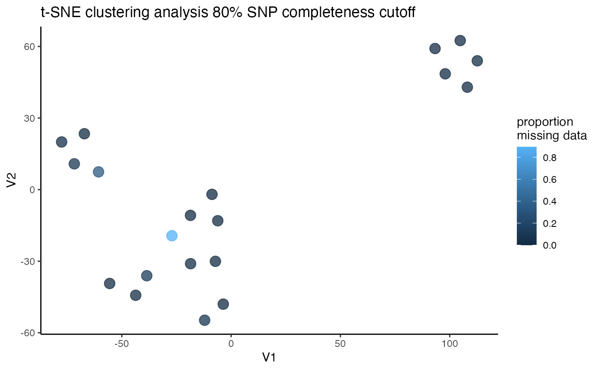

Vizualise how missing data thresholds affect sample clustering
assess_missing_data_tsne.RdThis function can be run in two ways: 1) Without 'thresholds' specified. This will run t-SNE for the input vcf without filtering, and visualize the clustering of samples in two-dimensional space, coloring each sample according to a priori population assignment given in the popmap. 2) With 'thresholds' specified. This will filter your input vcf file to the specified missing data thresholds, and run a t-SNE clustering analysis for each filtering iteration. For each iteration, a 2D plot will be output showing clustering according to the specified popmap. This option is ideal for assessing the effects of missing data on clustering patterns.
assess_missing_data_tsne( vcfR, popmap = NULL, thresholds = NULL, perplexity = NULL, iterations = NULL, initial_dims = NULL, clustering = TRUE )
Arguments
| vcfR | a vcfR object |
|---|---|
| popmap | set of population assignments that will be used to color code the plots |
| thresholds | a vector specifying the missing data filtering thresholds to explore |
| perplexity | numerical value specifying the perplexity paramter during t-SNE (default: 5) |
| iterations | a numerical value specifying the number of iterations for t-SNE (default: 1000) |
| initial_dims | a numerical value specifying the number of initial_dimensions for t-SNE (default: 5) |
| clustering | use partitioning around medoids (PAM) to do unsupervised clustering on the output? (default = TRUE, max clusters = # of levels in popmap + 2) |
Value
a series of plots showing the clustering of all samples in two-dimensional space
Examples
#>#>#> [[1]] #> V1 V2 pop pam.clust missing #> 1 -21.817034 51.960294 californica 1 0.005847953 #> 2 -16.604207 31.230375 californica 1 0.005847953 #> 3 -21.391474 61.365407 californica 1 0.017543860 #> 4 -11.075735 40.963542 californica 1 0.000000000 #> 5 -21.526845 39.252405 californica 1 0.005847953 #> 6 1.206668 -105.562559 insularis 2 0.005847953 #> 7 -5.192100 -120.478404 insularis 2 0.000000000 #> 8 4.147520 -117.999175 insularis 2 0.005847953 #> 9 10.105444 -110.305773 insularis 2 0.005847953 #> 10 -7.109449 -110.573486 insularis 2 0.000000000 #> 11 12.157778 43.207582 woodhouseii 1 0.000000000 #> 12 15.862556 51.311318 woodhouseii 1 0.076023392 #> 13 -1.177286 77.461613 woodhouseii 1 0.000000000 #> 14 3.044428 62.186027 woodhouseii 1 0.116959064 #> 15 6.393167 69.598685 woodhouseii 1 0.011695906 #> 16 20.494783 -2.318659 coerulescens 1 0.029239766 #> 17 10.839123 4.778829 coerulescens 1 0.327485380 #> 18 -8.959113 50.966253 coerulescens 1 0.894736842 #> 19 11.146261 -5.405786 coerulescens 1 0.087719298 #> 20 19.455516 -11.638488 coerulescens 1 0.005847953 #>